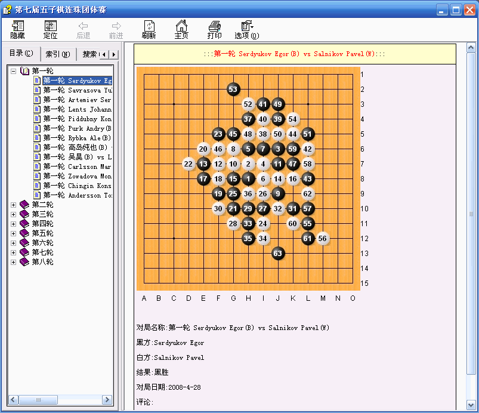

第七届世界连珠团体锦标赛前八轮谱CHM版
首页
定式及研究
#1 第七届世界连珠团体锦标赛前八轮谱CHM版 作者：小丸.net 发表时间：2008-5-9 21:53:55
第七届世界连珠团体锦赛前八轮谱CHM版

 点击这里下载第七届五子棋连珠团体赛.rar
点击这里下载第七届五子棋连珠团体赛.rar
备注,里面有几个名字在普通的文本显示方式下无法正常显示,但看到那个外文名字应该可以知道是谁,不影响正常使用,请谅解.
#2 Re:第七届世界连珠团体锦标赛前八轮谱CHM版 作者：逆刃 发表时间：2008-5-9 22:32:47
小丸大哥辛苦了，每次重要的比赛结束后你都细心地做个精致的电子版给我们享用，太感谢你了！
#3 Re:第七届世界连珠团体锦标赛前八轮谱CHM版 作者：雅匪 发表时间：2008-5-9 23:56:34
即使不看，我也敬佩这个“版主”
#4 Re:第七届世界连珠团体锦标赛前八轮谱CHM版 作者：nara 发表时间：2008-5-10 9:05:09
哈哈谢谢小丸哥.顶了
#5 Re:第七届世界连珠团体锦标赛前八轮谱CHM版 作者：lfzxdh 发表时间：2008-5-10 16:34:46
丸子同志辛苦啦~~谢谢哦~~
#6 Re:第七届世界连珠团体锦标赛前八轮谱CHM版 作者：五子天涯 发表时间：2009-4-26 11:03:11
有没有字符串版？或LIB版？
#7 Re:第七届世界连珠团体锦标赛前八轮谱CHM版 作者：小丸.net 发表时间：2009-4-26 21:27:48
当然有,
08第七届世团赛.zip
#8 Re:第七届世界连珠团体锦标赛前八轮谱CHM版 作者：小豆 发表时间：2009-6-13 15:02:09
感谢
#9 Re:第七届世界连珠团体锦标赛前八轮谱CHM版 作者：阿又 发表时间：2009-11-1 17:15:33
哈哈哈，好东西啊！收了，找时间学习学习！